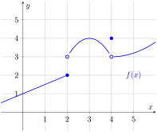

1. Graphical Limit Analysis.
Referencing the provided graph of \(f(x)\text{,}\) determine which of the following statements are true. Explain your answers.

-
Does \(\lim_{x \to 2^-} f(x)\) exist?
-
Does \(\lim_{x \to 2^+} f(x)\) exist?
-
Does \(\lim_{x \to 2} f(x)\) exist?
-
Does \(\lim_{x \to 4^-} f(x)\) exist?
-
Does \(\lim_{x \to 4^+} f(x)\) exist?
-
Does \(\lim_{x \to 4} f(x)\) exist?
Solution.
Based on the piecewise behavior described in the TikZ/Picture code:
-
No. Continuity requires the limit to exist.
-
Yes. Both one-sided limits equal \(3\text{.}\)
-
No. While the limit exists (\(3\)), the point is defined at \(f(4) = 4\text{.}\) Since \(3 \neq 4\text{,}\) it is not continuous.